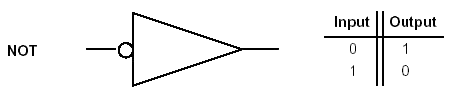

| Origins of Boolean Algebra |
|---|
|
Boolean algebra is a system that consists of only two values: “true” or “false”, “on” or “off”, “closed” or “open”. In 1847, George Boole published The Mathematical Analysis of Logic, a book that showed how to simplify a cryptic pile of data using a specific logic. Boole had an idea that said if a simple scheme of logic can be represented by precise symbols, then the whole scheme can be read as an algebraic equation. Boole’s idea is referred to today as Boolean algebra. Boolean algebra is still in use today for linguistics, law, natural sciences, and computer technology. Whole search engines are constructed on the basis of Boolean algebra but our site will teach you the basics of Boolean algebra. You can check our tutorial to learn the basics of Boolean algebra and later the math behind some of the more complex equations. You can later test you proficiency in Boolean algebra with our quiz. You can also learn more about Boolean algebra by referring to our references page. Thanks for you user using our services. |
| This is a logic gate that relates to equation X=A  |
| C | D | D | X |
|---|---|---|---|
| 0 | 0 | 1 | 1 |
| 0 | 1 | 0 | 1 |
| 1 | 0 | 1 | 1 |
| 1 | 1 | 0 | 1 |
{kind=link}
{kind=link}